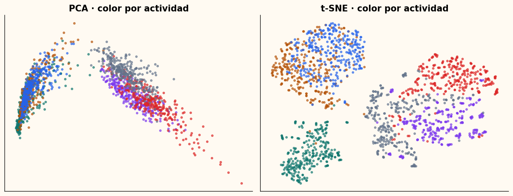
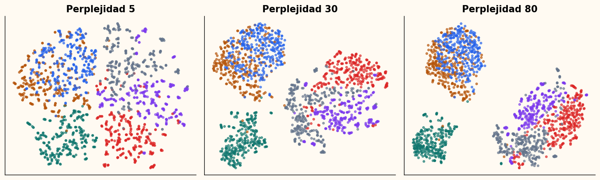
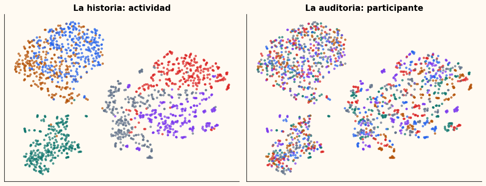

Vecinos antes que islas
t-SNE y el atlas del movimiento humano
Semana 9 · 14 de octubre de 2026
Tenemos 561 variables, no un mapa
3.600 × 561
Ventanas de acelerómetro y giroscopio.
30 participantes · 6 actividades · 20 ventanas por combinación.
PCA aplana; no necesariamente desenrolla

El mismo dato admite mapas incompatibles

La pregunta correcta es local
¿Quiénes son los vecinos plausibles de cada observación?
No preguntamos todavía cuántos grupos existen.
Una distancia se vuelve afinidad
p_{j|i}=\frac{\exp(-\beta_i\lVert x_i-x_j\rVert^2)}
{\sum_{k\ne i}\exp(-\beta_i\lVert x_i-x_k\rVert^2)}
Cada punto tiene su propia escala \beta_i.
Perplejidad fija una entropía efectiva
\operatorname{Perp}(P_i)=\exp\left[-\sum_j p_{j|i}\log p_{j|i}\right]
- No es el número de grupos.
- No es exactamente el número de vecinos.
- Sí controla una escala local efectiva.
La búsqueda binaria calibra cada fila
- Proponga \beta_i.
- Calcule P_i y su entropía.
- Aumente \beta_i si el vecindario es demasiado amplio.
- Repita hasta alcanzar la perplejidad.
Dos direcciones se vuelven una relación
p_{ij}=\frac{p_{j|i}+p_{i|j}}{2n}
Entonces P=P^T, p_{ii}=0 y \sum_{ij}p_{ij}=1.
Dos dimensiones producen hacinamiento
Muchos vecinos moderados en alta dimensión compiten por poco espacio.
Una gaussiana también en el plano concentraría demasiada masa cerca del centro.
Las colas pesadas abren espacio
q_{ij}=\frac{(1+\lVert y_i-y_j\rVert^2)^{-1}}
{\sum_{k\ne l}(1+\lVert y_k-y_l\rVert^2)^{-1}}
Student-t con un grado de libertad.
KL penaliza vecinos inventados
C=KL(P\Vert Q)=\sum_{i\ne j}p_{ij}\log\frac{p_{ij}}{q_{ij}}
p_{ij} grande y q_{ij} pequeño: vecino perdido.
p_{ij} pequeño y q_{ij} grande: vecino falso.
El gradiente combina atracción y repulsión
\frac{\partial C}{\partial y_i}=4\sum_j(p_{ij}-q_{ij})
(y_i-y_j)(1+\lVert y_i-y_j\rVert^2)^{-1}
Exagerar temprano no crea evidencia
Multiplicar P al inicio ayuda a separar vecindarios antes del refinamiento.
Es una estrategia de optimización, no una prueba de que existan grupos.
Las invariantes van antes de la figura
assert np.allclose(P, P.T)
assert np.isclose(P.sum(), 1.0)
assert np.isfinite(Y).all()
Una imagen atractiva no sustituye estas pruebas.
Una clase tiene una responsabilidad
BaseEmbeddingReducer
↑
TSNEFromScratch ──→ EmbeddingResult
↓ ↓
ExperimentRunner ─→ EmbeddingEvaluator
El atlas cuenta dos historias

Preservar vecinos se puede medir

Un mapa responsable necesita sensibilidad
Compare:
- Perplejidad 5, 30 y 80.
- Al menos dos semillas.
- Color por actividad y por participante.
- Métrica local junto a la figura.
Cierre: el mapa propone, la auditoría decide
- ¿Qué controla la perplejidad?
- ¿Qué no significa la distancia entre islas?
- ¿Qué explicación rival debe comprobar?